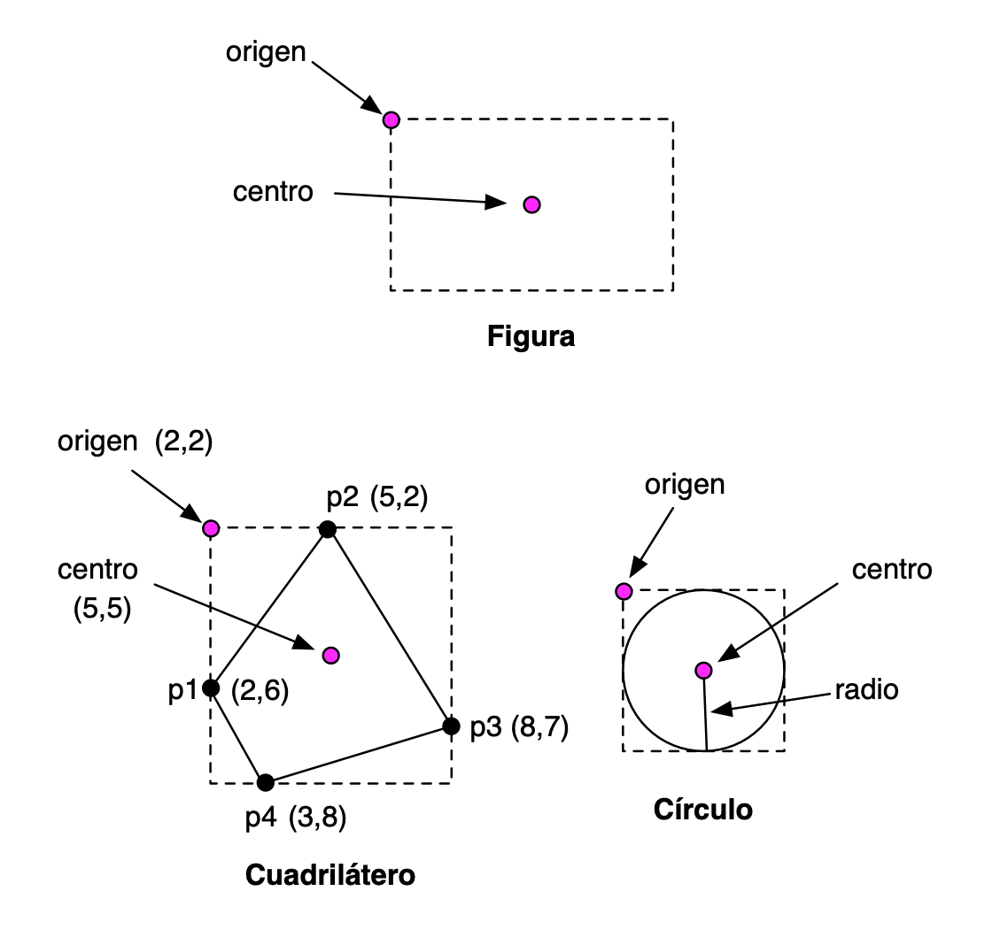

Práctica 11: Programación Orientada a Objetos en Swift (1)¶
Antes de la clase de prácticas¶
Los siguientes ejercicios están basados en los conceptos de teoría vistos la semana pasada. Antes de la clase de prácticas debes repasar todos los conceptos y probar en con el compilador de Swift todos los ejemplos de los siguientes apartados del tema 6 Programación OO con Swift
- Clases y estructuras
- Propiedades
- Métodos
- Inicialización
- Herencia
Ejercicio 1¶
Contesta los siguientes apartados sin usar el compilador de Swift. Una vez los hayas terminado, comprueba si la solución que habías indicado era correcta.
a) Examina el siguiente código. ¿Qué error o errores tiene? Arregla los errores con el mínimo número de cambios posibles e indica qué se va a imprimir por pantalla.
struct MiEstructura {
var x = 0
}
class MiClase {
var x = 0
}
func foo(_ c: MiClase, _ x: Int) {
c.x = x
}
let s1 = MiEstructura()
var s2 = s1
let c1 = MiClase()
var c2 = c1
s1.x = 10
c1.x = 10
print ("s2.x: \(s2.x), c2.x: \(c2.x)")
foo(c1, 20)
print("c1.x, después de llamar a la función: \(c1.x)")
b) Examina el código a continuación y añade en la estructura Cuadrado
dos versiones de un método movido que reciba un incremento x y un
incremento y y devuelva un nuevo cuadrado resultante de haber movido
su esquina. Llama a la primera versión del método movido1 y usa en
ella el método movida de la estructura Coord. Llama a la segunda
versión del método movido2 y usa en ella el método mueve de la
estructura Coord. Añade también un método mutador mueve que haga
lo mismo que los anteriores, pero mutando la posición del cuadrado.
struct Coord {
var x: Double
var y: Double
func movida(incX: Double, incY: Double) -> Coord {
return Coord(x: x+incX, y: y+incY)
}
mutating func mueve(incX: Double, incY: Double) {
x = x + incX
y = y + incY
}
}
struct Cuadrado {
var esquina = Coord(x: 0.0, y: 0.0)
var lado: Double
func movido1 ... {
...
}
func movido2 ... {
...
}
// Añade un método mutador mueve
}
c) Indica qué muestra por pantalla la función print:
func foo(palabra: String, longitud: Int) -> Bool {
if palabra.count >= longitud {
return true
}
else {
return false
}
}
class MisPalabras {
var guardadas: [String] = []
func guarda(_ palabra: String) {
guardadas.append(palabra)
}
var x : [Bool] {
get {
return guardadas.map {foo(palabra: $0,longitud: 4)}
}
}
}
let palabras = MisPalabras()
palabras.guarda("Ana")
palabras.guarda("Pascual")
palabras.guarda("María")
print(palabras.x)
Ejercicio 2¶
a) El siguiente código usa propiedades calculadas y observadores de propiedades. ¿Qué se imprime al final de su ejecución? Reflexiona sobre el funcionamiento del código, compruébalo con el compilador y experimenta haciendo cambios y comprobando el resultado.
var x = 10 {
didSet {
if (x > 100) {
x = oldValue
}
}
}
var y: Int {
get {
return x / 3
}
set {
x = 3 * newValue
}
}
var z : Int {
get {
return x + y
}
set {
x = newValue / 2
y = newValue / 2
}
}
z = 60
print("y: \(y)")
print("x: \(x)")
z = 600
print("y: \(y)")
print("x: \(x)")
b) El siguiente código usa observadores de propiedades y una variable del tipo (estática).
¿Qué se imprime al final de su ejecución? Reflexiona sobre el funcionamiento del código, compruébalo con el compilador y experimenta haciendo cambios y comprobando el resultado.
struct Valor {
var valor: Int = 0 {
willSet {
Valor.z += newValue
}
didSet {
if valor > 10 {
valor = 10
}
}
}
static var z = 0
}
var c1 = Valor()
var c2 = Valor()
c1.valor = 20
c2.valor = 8
print(c1.valor + c2.valor + Valor.z)
Ejercicio 3¶
Tenemos que escribir un programa que permita definir resultados de partidos de fútbol y calcular la puntuación de un conjunto de equipos una vez que se han jugado esos partidos.
Un ejemplo de ejecución del código debería ser cómo sigue:
--------------
Puntuación antes de los partidos:
Real Madrid: 0 puntos
Barcelona: 0 puntos
Atlético Madrid: 0 puntos
Valencia: 0 puntos
Athlétic Bilbao: 0 puntos
Sevilla: 0 puntos
--------------
Resultados:
Real Madrid 0 - Barcelona 3
Sevilla 1 - Athlétic Bilbao 1
Valencia 2 - Atlético Madrid 1
--------------
Puntuación después de los partidos:
Real Madrid: 0 puntos
Barcelona: 3 puntos
Atlético Madrid: 0 puntos
Valencia: 3 puntos
Athlétic Bilbao: 1 puntos
Sevilla: 1 puntos
Escribe código en Swift que permita resolver el problema, utilizando structs.
El ejercicio se puede resolver de varias formas. Te proponemos una solución con tres estructuras:
Equipo: Contiene el nombre y los puntos de un equipo y un método para actualizar las puntacionesPartido: Nombres de los equipos y goles del partidoLiga: Contiene array de equipos y partidos jugados, así como los métodos para actualizar una jornada
Puedes usar esta propuesta, o proponer tú alguna solución alternativa.
Ejercicio 4¶
Escribe un ejemplo de código en el que definas una relación de herencia entre una clase base y una clase derivada. Comprueba en el código que un objeto de la clase derivada hereda las propiedades y métodos de la clase base.
Investiga sobre el funcionamiento de la herencia en Swift. Escribe ejemplos en donde compruebes este funcionamiento. Algunos ejemplos de preguntas que puedes investigar (puedes añadir tú más preguntas):
- ¿Se puede sobreescribir el valor de una propiedad almacenada? ¿Y calculada?
- ¿Se puede añadir un observador a una propiedad de la clase base en una clase derivada?
- ¿Hereda la clase derivada propiedades y métodos estáticos de la clase base?
- ¿Cómo se puede llamar a la implementación de un método de la clase base en una sobreescritura de ese mismo método en la clase derivada?
Ejercicio 5¶
En este ejercicio vamos a trabajar con figuras geométricas usando estructuras y clases.
En el ejercicio deberás usar la función para calcular la raíz cuadrada y el valor de la constante matemática pi.
- Para usar la función
sqrtdebes importar la libreríaFoundation:
import Foundation
- El valor de la constante matemática pi lo puedes obtener con la
propiedad
Double.pi.
Suponemos que estamos trabajando con coordenadas
de pantalla, en las que la coordenada (0,0) representa la coordenada
de la esquina superior izquierda de la pantalla. La coordenada Y crece
hacia abajo y la coordenada X crece hacia la derecha. Las coordenadas
se definirán con números decimales (Double).
Vamos a definir las siguientes estructuras y clases:
- Estructuras:
Punto,Tamaño - Clases:
Figura(superclase),CuadriláteroyCirculo(clases derivadas).

Vamos a definir propiedades almacenadas y propiedades calculadas para todas las figuras geométricas.
Estructuras Punto y Tamaño
Las debes declarar tal y como aparecen en los apuntes.
Clase Figura:
- Inicializador:
Figura(origen: Punto, tamaño: Tamaño)
- Propiedades de instancia almacenadas:
origen(Punto) que define las coordenadas de la esquina superior izquierda del rectángulo que define la figuratamaño(Tamaño) que define el alto y el ancho del rectángulo que define la figura.
- Propiedades de instancia calculadas:
area(Double, solo lectura) que devuelve el área del rectángulo que engloba la figura.centro(Punto, propiedad de lectura y escritura). Es el centro del rectángulo que define la figura. Si modificamos el centro se modifica la posición del origen de la figura.
Clase derivada Cuadrilatero
Un cuadrilátero se define por cuatro puntos. La figura representa el rectángulo que engloba los cuatro puntos del cuadrilátero (ver imagen arriba).
- Inicializador:
Cuadrilatero(p1: Punto, p2: Punto, p3: Punto, p4: Punto). Los puntos se dan en el orden definido por el sentido de las agujas del reloj, aunque no siempre se empezará por el punto que está situado más a la derecha. Al crear el cuadrilátero deberemos actualizar las propiedadesorigenytamañode la figura. Para calcular estas propiedades deberás obtener las coordenadas x e y mínimas y máximas de todos los puntos.
- Propiedades de instancia almacenadas propias:
- Los puntos del cuadrilátero
p1,p2,p3yp4.
- Los puntos del cuadrilátero
- Propiedades de instancia calculadas:
centro(Punto, de lectura y escritura), heredada de la superclase Elsettermodifica la posición de los puntos del cuadrilátero y del origen de la figura, desplazándolos los mismos incrementos en los que ha sido desplazado el centro de la figura.area(Double, sólo lectura ) que devuelve el área del cuadrilátero.
Clase derivada Circulo
Un círculo se define por un centro y un radio. La superclase figura representa el cuadrado más pequeño en el que está inscrito el círculo (ver imagen arriba).
- Inicializador:
Circulo(centro: Punto, radio: Double). Al crear el círculo deberemos actualizar las propiedadesorigenytamañode la figura.
- Propiedades de instancia almacenadas:
radio(Double) que contiene la longitud del radio.
- Propiedades de instancia calculadas:
centro(Punto, de lectura y escritura), heredada de la superclase.area(Double, de lectura y escritura) que devuelve el área del círculo. Elsettermodifica el tamaño del círculo (su radio), manteniendo el centro en la misma posición.
Estructura AlmacenFiguras
- Propiedades almacenadas:
figuras: array de figuras.
- Propiedades calculadas:
numFiguras(Int) que devuelve el número total de figuras añadidas.areaTotal(Double) que devuelve la suma total de las áreas de todas las figuras añadidas.
- Métodos:
añade(figura:)que añade una figura al array.desplaza(incX: Double, incY: Double): desplaza todas las figuras las dimensiones especificadasincX(incremento en la coordenada X) eincY(incremento en la coordenada Y). Se deberán mover los centros de todas las figuras en estas magnitudes.
Implementa las estructuras anteriores y escribe algún ejemplo de código en el que se creen al menos un cuadrilátero y un círculo, se prueben sus propiedades, se añadan al almacén de figuras y se prueben sus métodos.
Lenguajes y Paradigmas de Programación, curso 2021-22
© Departamento Ciencia de la Computación e Inteligencia Artificial, Universidad de Alicante
Domingo Gallardo, Cristina Pomares, Antonio Botía, Francisco Martínez